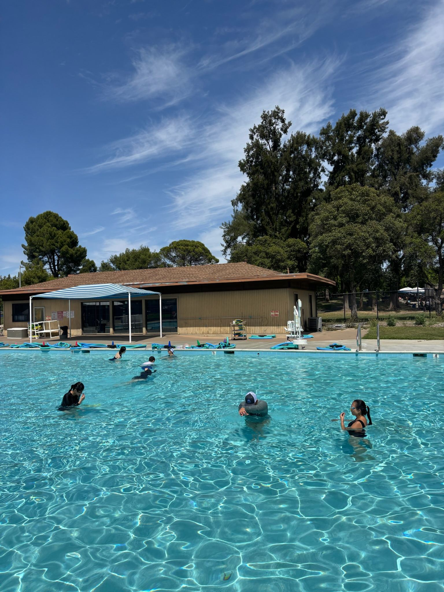
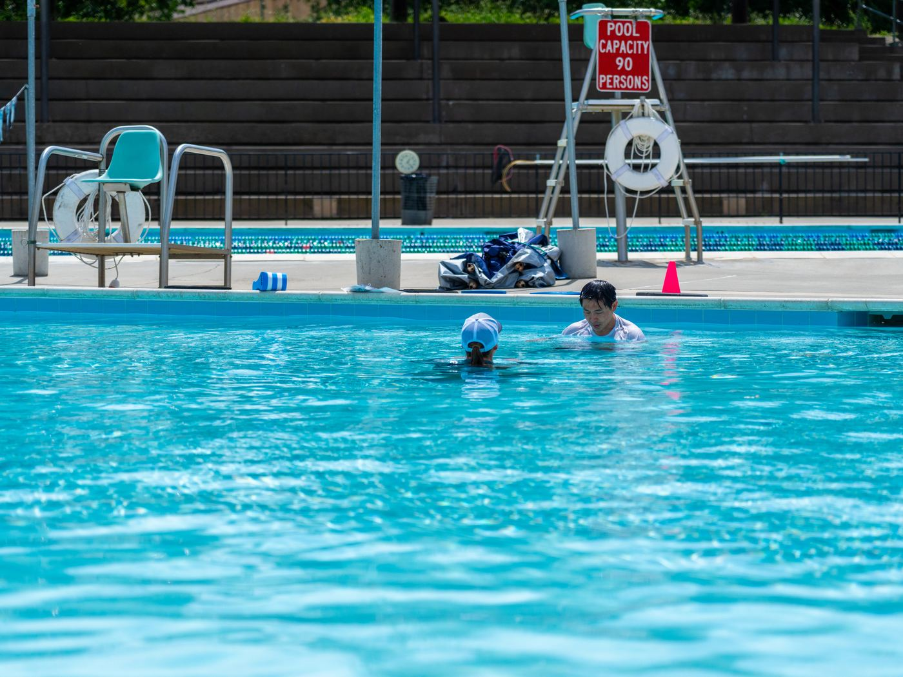

Our Purpose
SWAG (Swim AGS) is dedicated to promoting water safety and wellness among UC Davis students, staff, and professors. Through our free water safety sessions, we cultivate community engagement and meaningful relationships.
Our Why
Adults who took structured survival swimming sessions have a higher chance of self-rescue in unexpected immersion.
Taking a swim session reduces the risk of drowning by nearly nine in ten.
People with basic water training survived twice as long in open water compared to non-swimmers.

Water Safety for Everyone
Free safety sessions led by Division 1 water polo athletes, with small groups and a 3:1 participant-to-instructor ratio so every session feels personal.
Participant Sign UpHave an interest in swimming and helping out your local community? Help support SWAG at clinics!